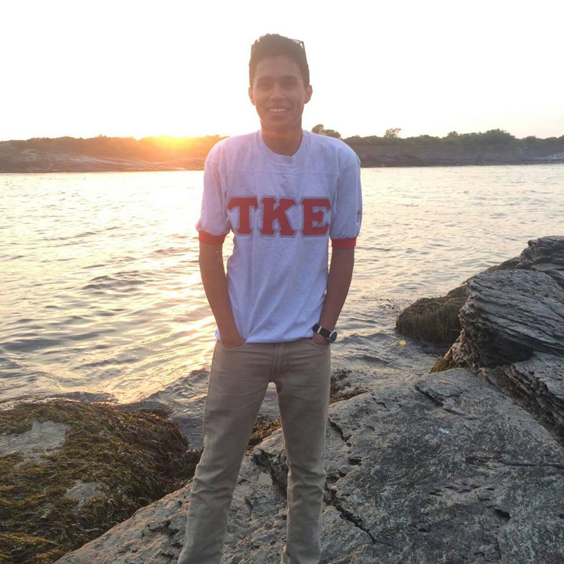
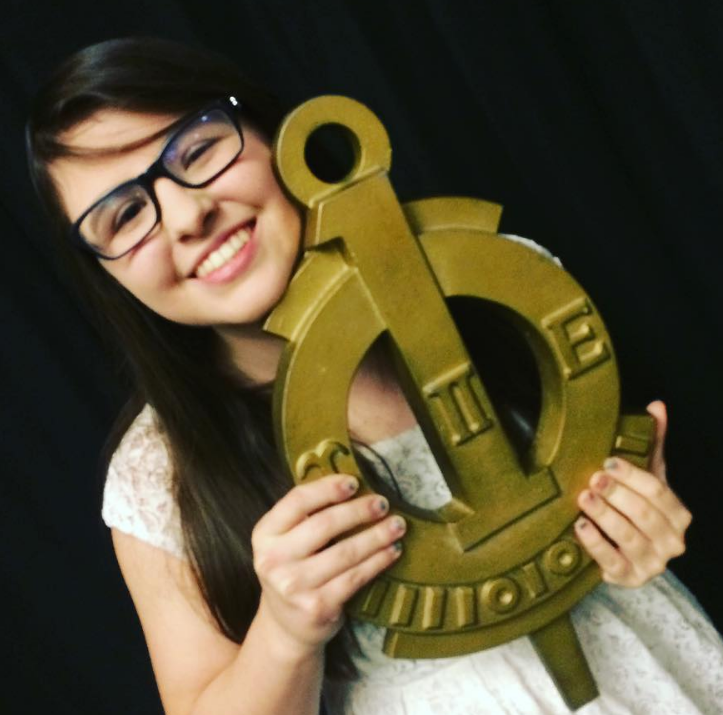

Erik Sola |
Aura Velarde |
|  |  |
| I am a Junior Computer Science student pursuing a minor in both Data Science and Media Art. I am involved in both Tau Kappa Epsilon, Zeta Mu chapter and Upsilon Pi Epsilon at WPI.
In my free time I read, paint, take photographs, and play the ukulele. Sometimes I code. |
I am a junior majoring in Computer Science. I love dogs and good food. I am a sister of Alpha Phi, involved with Upsilon Pi Epsilon, Women in Computer Science and the Connections Program. I also volunteer at an animal shelter when I have free time! |